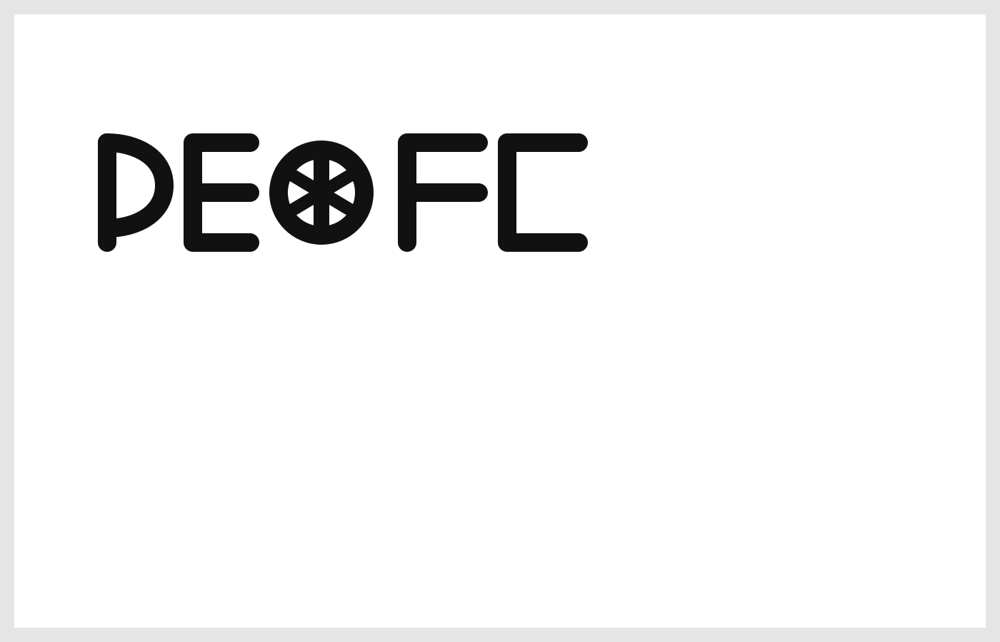

NUTOPIAN EMBASSY
Entrance via the Sharegold Portal — Christian welcomes you.
Weiße Flagge – PE(A)CE

Weiße Flagge mit Anarchie-A. Kapitulation vor dem Frieden. Keine Grenzen. Keine Pässe.
Silent Anthem
The Nutopian International Anthem — silence.